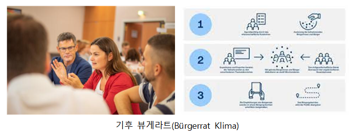

MIT Technology Review
탈탄소화
<각 나라별 정책>
5.독일
“80~95% 감축(1990년 대비)” 에너지 효율 및 재생에너지 확대, R&D 등을 강조한 부문별 이행전략 제시, 생태세제 개혁, 교육 및 정보 공유 확대
① 독일, 수소에너지 중심의 재생에너지 개발 추진
일찍이 석유파동과 체르노빌 원전 사고를 계기로 원자력 폐지를 선도하고 있는 독일은 관련 정책을 유지하되, 수소를 활용한 신재생 에너지 개발 연구와 에너지 효율 제고를 위한 EU 협의를 추진하고 있다. 지난해 말 독일 정부는 ‘독일국가수소전략’을 공개하고, 수소 에너지를 중심으로 한 탈탄소 정책에 적극적으로 투자하겠다고 발표했다. 구체적인 내용은 2050년 탄소 중립 실현을 위해 차세대형 태양전지, 탄소리사이클 등을 실용화하는 연구개발 가속화, 수소 사회 구축을 위한 민관 협력 및 커뮤니케이션 유지 등을 포함하고 있다. 신생에너지 선도국으로 많은 국가들의 롤모델이기도 한 독일이 어떤 방법으로 수소 에너지를 대체 에너지로 활용하게 될지 세계의 이목이 집중되고 있다.
① 재생에너지의 안정성 확대, 기술혁신, 일자리 창출
기후변화 대응을 위한 독일 정부의 발빠른 대응과 목표 상향 조정에 대해 독일 시민사회는 강력한 지지를 보이고 있습니다. 그러나 NGO 등 일부 단체들은 여전히 1.5℃ 목표 달성을 위해 보다 강력한 목표가 필요하다고 주장하고 있습니다. 최근 진행된 선거를 통해 알 수 있듯 기후보호가 중요한 쟁점으로 드러났으며, 모든 정당에서 강력한 대응 목표를 제시했습니다. 프쉐딕 소장은 앞으로도 기후보호에 대한 독일 시민사회의 지지는 계속될 것으로 본다고 답변했습니다.
① ‘뷰게라트’
프쉐딕 소장은 이러한 야심찬 온실가스 감축 목표 달성을 위해 민간 참여가 가장 중요한 부분이라고 말했습니다. 독일 시민들은 대체로 야심찬 목표와 기후변화 완화 전략을 지지하고 있지만, 다른 나라에서도 그러하듯 일부 님비현상을 겪고 있다고 합니다. 그렇기 때문에 시민의 참여가 매우 중요하며, 계획 단계에서부터 참여를 독려하는 것이 중요하다고 강조했습니다. 예를 들어 풍력발전단지를 개발한다고 한다면 시민들에게 투자에 참여할 수 있는 기회를 제공하는 등 계획 단계에서부터 참여를 장려할 수 있다고 말했습니다. 아울러 신기술의 이점, 다른 기술과의 비교 등 관련 정보를 투명하게 공개하고, 심도 있는 논의를 통해 시민들이 스스로 어떤 기술을 택할 것인지를 결정할 수 있도록 도와야 한다고 강조했습니다.

참고문헌1